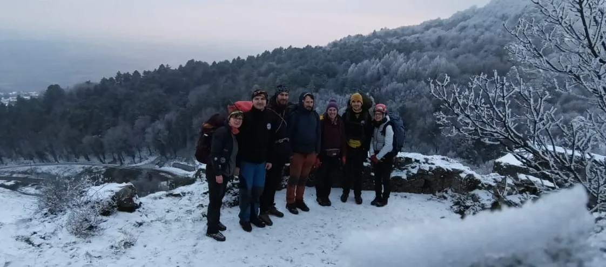

Kalnička škljizancija
Međudsječka suradnja SOV i SUKZ odvela je ekipu na Kalnik. u toj suradnji nismo sigurni da li su bolje jeli ili istraživali...

Pisali: Dragana Rajković & Mislav Sajko
Fotografije: Vinka Dubovečak (SUKZ), Jurica Jagetić (SUKZ), Mislav Sajko (SOV)
Kalnik je poznat po penjačkim smjerovima, paraglidingu, domu s finom klopom, hrpom planinarskih staza i feratti, ali mnogi ne znaju da Kalnik također skriva svoje podzemne tajne. Te podzemne tajne smo odlučili istražiti za vikend 18. i 19.1. Na poziv Pročelnika komisije za Speleologiju Hrvatskog planinarskog saveza i Speleološke udruge Kraševski zviri otisnuli smo se na daleki sjever Hrvatske.
Ekipu su činili: Jurica Jagetić, Vinka Dubovečak, Damir Androić, Vedran Ferenčak Fero, Tina Ugrinović, Mislav Sajko, Josip Težak i Dragana Rajković.
Suradnja je bila plodonosna te su ekipe kroz subotu i nedjelju u zimskim i snježnim uvjetima istražile 7 objekata. Plan je bio ucrtati speleološke objekte koje je ekipa Kraševskih zviri otkrila rekognosciranjem 2023. godine.
Prvi dan, spremni za istraživanja
Prvi dan cijela ekipa se okupila u restoranu pod nazivom Kalnička klet koji je nakon doručkovanja Vinkinih štrudlica poslužio kao polazna točka prema domu. Kako se tih dana rušilo drveće uokolo ceste prema domu, ceste je bila zatvorena te smo taj dio preskočili i odmah s punim ruksacima hrane i opreme krenuli prema prvom objektu. Prva špilja do koje je vodio strmi uspon nazvana je Vuklec, pozicionirana sa sjeverne strane Vuklec brijega. Manji objekt dužine 7,8 metara poslužio je za ponavljanje i učenje topografskog snimanja objekata, što je bio zadatak Tine i Dragane, uz strpljenje Jurice i ostale ekipe. Nakon što je špilja uspješno dokumentirana uputili smo se kroz blagi snijeg prema sljedećem cilju. Kako se ova špilja nalazila na još većoj strmini, do nje se popeo samo Damir i ucrtao ju. Ostatak ekipe okrepljivao se novom delicijom, kombinacijom ledenih siga i cedevite ananas&mango.
Prema ovoj deliciji špilja je nazvana Teslin sladoled, ukupne duljine 5,2 metra. Prema sljedećem cilju vodila nas je dijelom i planinarska staza i prekrasni snježni prizori, zaleđene grančice koje smo fotografirali te zanimljiva glazba Vatrogasaca iz Tininog prijenosnog zvučnika. U daljini se počeo nazirati i stari grad Veliki Kalnik, kao i grebenska staza 7 zubi. Ovdje smo se zaustavili i do sljedeće špilje bilo je potrebno koristiti speleo opremu, jer je silazak do sjeverne strane prema špilji jedino tako bio moguć. Za tu akciju bio je zadužen Fero te je uspješno ubušio i pločicu na ovaj novi objekt. Objekt je nazvan Čvarkolada, iz jednostavnog razloga, uspomene na limitirano izdanje čokolade s čvarcima. Nitko ju zapravo nije probao, ali kako smo tamanili čvarke kod ove špilje, tako se cijela ova ideja činila zaokruženom. Izmjerena duljina objekta iznosi 5,7 metara.
Nakon dokumentiranja ovog objekta spustili smo se s brda Vuklec i zaputili prema starom gradu Veliki Kalniku, u čijoj neposrednoj blizini se nalaze dva objekta. Markiranom planinarskom stazom koja vodi iznad starog grada, zaustavili smo se kod natpisa “špilja” i doista, ovdje se nalazila manja špilja. Špilja je nazvana Dobri duh Kalnika, ukupne duljine 5,2 metara. Nakon što je špilja ucrtana i pločica ubušena, započeli smo silazak. Ljepote ove utvrde djelomično isklesane na živoj vapnenačkoj stijeni i predivan pogled prema jugu, iskoristili smo za zajedničko fotografiranje.
U poslijepodnevnim satima zaputili smo se prema domu gdje nas je dočekala vijest o nestašici plina, što je značilo smanjen izbor kuhanih jela i negrijane sobe za spavanje. Iznimlno uljudna domaćica, ponudila nam je spavanje u prostoriji restorana uz raskošnu kaljevu peć, što smo objeručke prihvatili. Večer smo proveli u iću i piću i gledanju raznoraznih speleo i nešto manje speleo uradaka na Damirovom projektoru.
Drugi dan smo Jurica, Vinka, Damir i ja krenuli u potragu za špiljama pod i oko Starog grada Kalnika. Prvu od 8 metara našli smo odmah i krenuli u njeno topografsko snimanje. Kruži priča da je ta špilja nekoć bila puno duža, ali se nekad tijekom Srednjeg vijeka urušila. S time smo ostali uskraćeni za nova znanja i nove metre. Ali nema veze, veli se „kaj imaš, s tim klimaš“. Sljedeća na redu je bila Blazerka ispod smjera Blazer. Posprdno smo je htjeli nazvati penjački WC, ali nas je Damir spriječio u tom naumu kako ju stvarno i ne bismo pretvorili u WC. Uz malo probijanja i stiskanja ušli smo Jurica u malu dvoranu. Crtanje obiju špilja je bilo brzinski, pogotovo uz znanje i iskustvo Pročelnika komisije Jurice. Na kraju su špilje iznosile 7 i 8 metara duljine.
Zadnji speleološki objekt u našoj agendi našla se Špilja ispod Križnog kamena. Na prijavu lokalnog markacista Štefa koji zna svaku krivinu i kutak Kalnika odlučeno je da ona bude šećer na kraju našeg izleta. Nakon malo planinarenja, navirivanja u svaku rupu i gledanja karte/GPS-a napokon smo je ugledali. Kapitalac, reklo bi se. Doduše po kalničkim mjerilima. Iako samo 13 metara uspjeli smo naći pauke i jednog usamljenog šišmiša. Da ne narušavamo mir, brzo i tiho smo je snimili i izašli van. Sa 7 objekata i preko 50 metara ukupne duljine objekata dajem ocjenu ovom izletu i suradnji 10/10. Nadamo se ponovno nekoj međuodsječkoj suradnji.